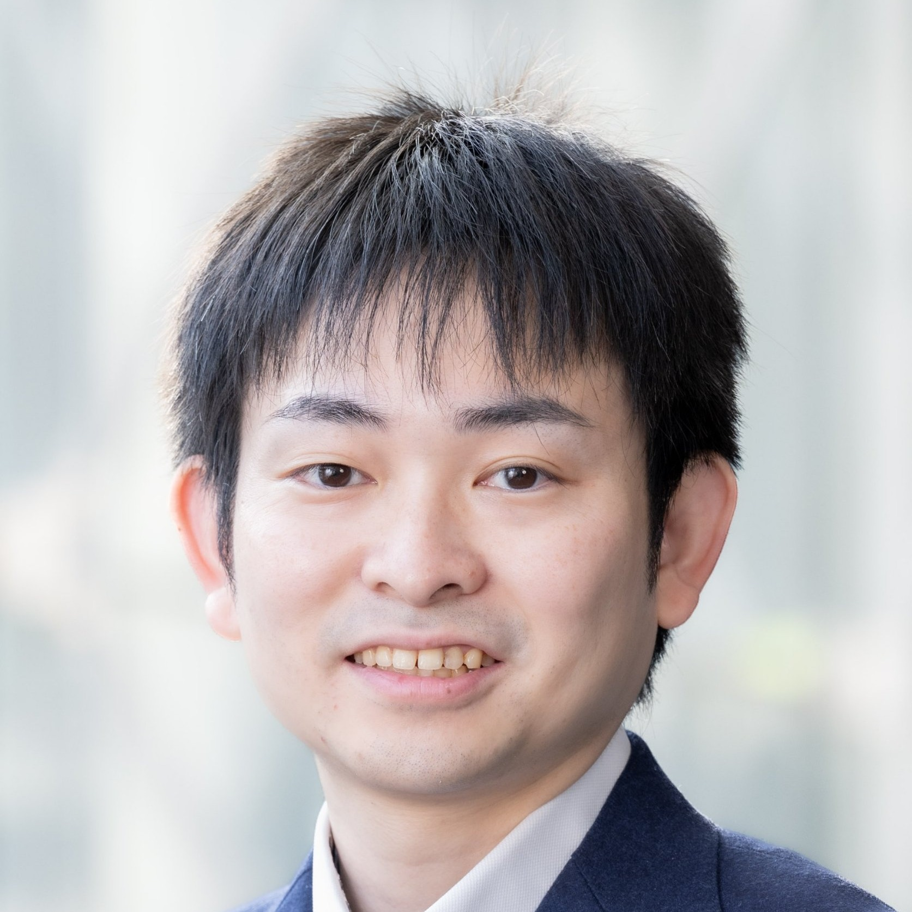
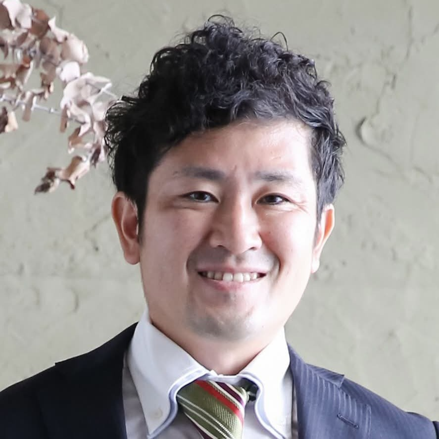

IEEE Career Lab 2026 in Fukuoka
日時・会場
- 【日時】
- 【会場】
2026年12月13日(日) 9:30 - 15:00
みんなの貸会議室博多駅前店 303会議室
〒812-0011 福岡県福岡市博多区博多駅前1丁目3-22 かき善ビル3階
〒812-0011 福岡県福岡市博多区博多駅前1丁目3-22 かき善ビル3階
全体スケジュール
| 9:15 | 受付開始 |
|---|---|
| 9:30-12:30 | Kansai & HSF 合同主催 第8回博士課程のキャリアについて語る会 |
| 12:30-13:30 | 休憩 |
| 13:30-15:00 | Nagoya YP 主催イベント「IEEE YPでの繋がりをどう活かすか？企業における学会活動活用術」 |
Kansai & HSF 合同主催 第8回博士課程のキャリアについて語る会
博士課程に興味のある学生・社会人はもちろん、博士の実情を知りたい企業の方も大歓迎です。皆さまのご参加をお待ちしています。
| 9:30-9:40 | 開会あいさつ |
|---|---|
| 9:40-10:15 | ご講演① TBD |
| 10:15-10:50 | ご講演② TBD |
| 10:50-11:00 | 休憩 |
| 11:00-11:35 | ご講演③ TBD |
| 11:35-12:05 | ご講演④ TBD |
| 12:05-12:20 | Kansai & HSF YP 紹介 |
| 12:20-12:30 | 閉会のあいさつ |
- 【主催】
- 【共催】
- 【協力】
IEEE Kansai Section Young Professionals Affinity Group
IEEE Hiroshima, Shikoku and Fukuoka Joint Sections Young Professionals Affinity Group
登壇者紹介
Nagoya YP 主催イベント
本イベントでは企業内における学会活動についてご紹介いただきます。
| 13:30-15:00 | Nagoya YP セッション |
|---|
登壇者紹介


- 【主催】
- 【共催】
- 【協力】
IEEE Japan Council
IEEE Kansai Section Young Professionals Affinity Group
IEEE Hiroshima, Shikoku and Fukuoka Joint Sections Young Professionals Affinity Group
IEEE Kansai Section Young Professionals Affinity Group
IEEE Hiroshima, Shikoku and Fukuoka Joint Sections Young Professionals Affinity Group
ネットワーキングセッション
- 【場所】
- 【時間】
- 【参加費】
博多駅周辺
16:00～
・2,000円程度